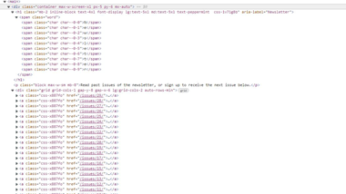
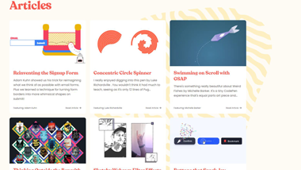

Code
Frontend Horse does a great job with the code side of their site. The code is easy to read and understand. The site appears to rely heavily on webpack to bundle the different files for the site. The site is built on a grid layout and largely utilizes flexbox.
User Interface - UI
The User Interface for Frontend Horse is visually appealing and makes sense logically. Cards are used in multiple places on the site to organize content and the color scheme is consistent across the site. The way the site utilizes the grid layout and flexbox keeps things looking very clean. There are also a lot of animations utilized that add nice finishing touches to the content.
User Experience - UX
Frontend Horse provides a great user experience for visitors. Almost everything on the site has a hover state and the cursor property is changed to consistently show what can be interacted with on the site. The site is reponsive and scales down to small screens nicely.
Summary
Frontend Horse combines great code, great UI, and great UX to provide a helpful resource to web developers. There are a lot of helpful articles and with the sites UI it is easy to discover great content. One feature that could improve the site is a search feature but it is not something that greatly detracts from the overall site.